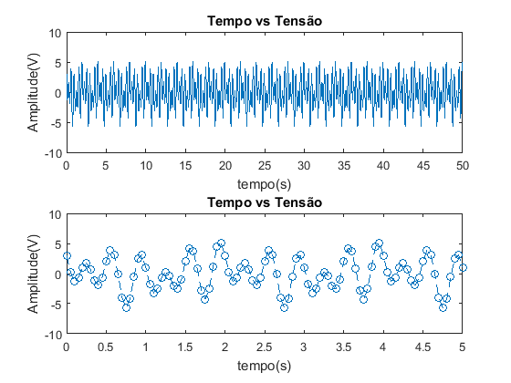
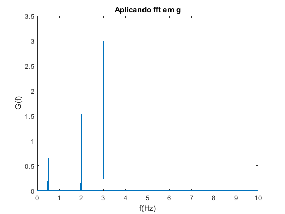
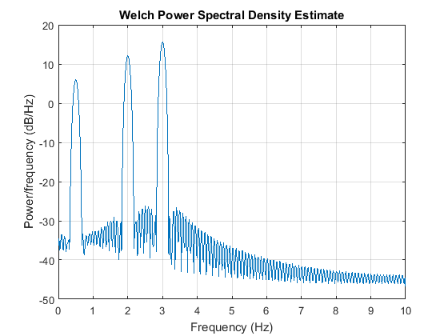

clear all close all clc % Laboratório de Transmissão de dados (Lab 1) % 1) Considere o sinal contínuo g(t), em Volts, da Eq. (1). Pede-se: % g(t) = cos(pit) + 2 cos(4pit) - 3 sin(6pit) [V ] %a % Utilizando os comandos plot e subplot, faça uma figura com dois gráficos: no gráfico de cima, % apresente o sinal com peróodo de amostragem de Ts = 0.05s e quantidade de amostras de N = 1000; % Na figura de baixo do subplot, apresente os primeiros 5 s do mesmo sinal (usar xlim) com linha % tracejada e marcando cada amostra com um ‘o’. Coloque r´otulos nos eixos e t´?tulo na figura (xlabel, % ylabel, title). t = (0:999)*0.05; g = cos(pi.*t) + 2*cos(4*pi.*t) - 3*sin(6*pi.*t); %b figure(1) aux=subplot(2,1,1); plot(t,g) title('Tempo vs Tensão') xlim(aux,[0 50]) xlabel('tempo(s)') ylabel('Amplitude(V)') aux = subplot(2,1,2); plot(t(1,1:101),g(1,1:101),'o--') title('Tempo vs Tensão') xlim(aux,[0 5]) xlabel('tempo(s)') ylabel('Amplitude(V)') %c1) % Calcule a energia de um per´?odo do sinal (EgT ), (utilize a função sum) considerando NT o número de % amostras de um período do sinal. % T = 2 segundos % Número de amostras = 40 Nt = 40; EgT = sum(abs(g(1:Nt).^2).*0.05) %c2) Calcule a a potência média (Pg) de todo o sinal, considerando To a dura¸c˜ao de todo o sinal em segundos, %sendo T0 = 49.95;% Duração de todo o sinal em segundos N = 1000;%Número de amostras Ts = 0.05; Pg = (1/T0)* sum(abs(g(1:N).^2).*Ts) % d) Obtenha a Transformada de Fourier (espectro de frequˆencias) G(f) do sinal da Eq. (1) usando a % transformada r´apida de Fourier (FFT) com o comando fft. Veja o help do fft no Matlab e na % pen´ultima linha deste help abra o “Reference page for fft” e veja como o fft ´e aplicado. Apresente % o m´odulo (abs) e a fase (angle) do espectro em dois gr´aficos de uma mesma figura. Como Ts = 0, 05, % a frequˆencia de amostragem fs ´e 1/Ts = 20 Hz. Logo, o eixo x de frequˆencias do espectro vai de 0 a % 10 Hz (ser´a melhor explicado no cap´?tulo de teorema da amostragem). Novamente, adicione r´otulos e % t´?tulos. Note que a frequˆencia e a amplitude do sinal g(t) ´e a mesma de G(f) se for feito fft(g). %close all figure(2) Ts = 0.05; G = fft(g); G2 = (G(1:501)*2)/1000; f = linspace(0,10,501); plot(f,abs(G2)) title('Aplicando fft em g') xlim([0 10]) xlabel('f(Hz)') ylabel('G(f)') %(e) Obtenha a curva da densidade espectral de potˆencia (espectro de potˆencias) Sg(f) do sinal da Eq. (1) % em dB usando o comando pwelch(g,[],[],<no de amostras>,fs). figure(3) fs = 1/Ts; pwelch(g,[],[],1000,fs); %close all % plot(1:1:501,10*log10(Sg)) % title('') % xlim([0 501]) % xlabel('') % ylabel('')
EgT =
14.0000
Pg =
7.0070
  